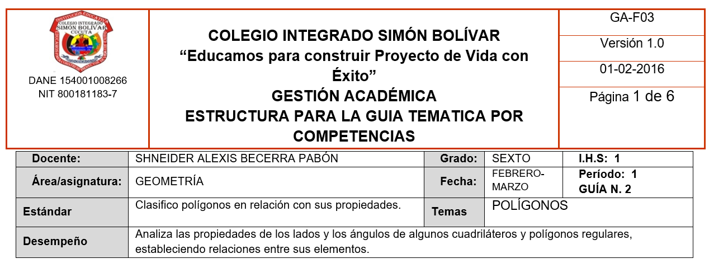

POLÍGONOS 6°

Polígonos y sus elementos esenciales
EXPLORACIÓN
Observa tu entorno
Mira a tu alrededor: el salón, las ventanas, el tablero, las baldosas del piso, tu cuaderno.
Muchas de las figuras que ves tienen forma cerrada y están formadas por segmentos rectos.
Observa las siguientes figuras:
![una imagen educativa en fondo blanco, estilo claro y limpio, con 6 figuras geométricas distribuidas en dos filas. Fila superior (3 figuras): Triángulo equilátero cerrado, formado únicamente por segmentos rectos. Cuadrilátero irregular cerrado, formado únicamente por segmentos rectos. Pentágono irregular cerrado, formado únicamente por segmentos rectos. Fila inferior (3 figuras): 4. Figura abierta formada por tres segmentos rectos que no se conectan en el último punto. 5. Figura cerrada formada por una línea curva (óvalo). 6. Figura mixta formada por segmentos rectos y una curva (forma tipo “D”). Condiciones matemáticas obligatorias: Los segmentos deben ser claramente rectos. Las figuras cerradas deben estar completamente cerradas sin espacios. La figura abierta debe tener un pequeño espacio visible entre extremos. No incluir nombres ni etiquetas. No incluir medidas. Grosor uniforme de línea (negro). Sin sombreado. Sin color de relleno. Sin fondo cuadriculado. Distribución equilibrada y simétrica. Estilo: ilustración vectorial, diseño educativo, alta claridad visual. Resolución recomendada: formato horizontal 16:9.](content/resources/20260217080416621YBB/2-1-1.png "Crear una imagen educativa en fondo blanco, estilo claro y limpio, con 6 figuras geométricas distribuidas en dos filas. Fila superior (3 figuras): Triángulo equilátero cerrado, formado únicamente por segmentos rectos.")
Responde en tu cuaderno:
- ★ ¿Cuáles de las figuras están formadas únicamente por líneas rectas?
- ★ ¿Cuáles figuras están cerradas?
- ¿Qué diferencias encuentras entre una figura cerrada y una figura abierta?
- ¿Qué sucede si una figura tiene una pequeña abertura en uno de sus lados?
Explora con dibujos
Paso 1: Dibuja una figura cerrada formada por 3 segmentos rectos.
Paso 2: Dibuja una figura cerrada formada por 4 segmentos rectos.
Paso 3: Dibuja una figura cerrada formada por 5 segmentos rectos.
Responde:
★ ¿Qué tienen en común todas las figuras que dibujaste?
¿En qué se diferencian?
¿Qué cambia cuando aumentas el número de segmentos?
Observa con atención
Marca en tus dibujos:
- Con un color los segmentos.
- Con otro color los puntos donde se unen los segmentos.
Responde:
8. ★ ¿Qué ocurre en los puntos donde se encuentran dos segmentos?
9. ¿Cuántos puntos de unión tiene cada figura?
10. ¿Hay alguna relación entre el número de segmentos y el número de puntos de unión?
No escribas reglas todavía. Solo describe lo que observas.
ANALIZA
Clasifiquemos lo observado
Observa nuevamente tus dibujos y responde:
- ★ ¿Todas las figuras cerradas formadas por segmentos rectos tienen la misma forma?
- ★ ¿Qué cambia cuando el número de segmentos aumenta?
- ¿Puedes ordenar tus figuras desde la que tiene menos segmentos hasta la que tiene más?
- ¿Qué sucede con los ángulos cuando agregas más segmentos?
Comparación guiada
Completa la siguiente tabla en tu cuaderno:
|Número de segmentos | ¿Es figura cerrada? | ¿Tiene líneas curvas? | ¿Cuántos puntos de unión? |
Llena la tabla con las figuras que dibujaste.
Recursos complementarios
![imagen educativa en fondo blanco con cuatro figuras geométricas alineadas horizontalmente: Triángulo. Cuadrilátero. Pentágono. Hexágono. Condiciones matemáticas estrictas: Todas las figuras deben estar cerradas. Formadas únicamente por segmentos rectos. Dibujadas con líneas negras de igual grosor. No deben ser todas regulares; al menos dos deben ser irregulares. En cada figura: Resaltar los segmentos con color azul. Resaltar los puntos de unión con pequeños círculos rojos. No incluir nombres como “triángulo”, “pentágono”, etc. No incluir definiciones. No incluir números visibles. No incluir texto explicativo. Sin fondo cuadriculado. Sin relleno interior. Distribución clara y espaciamiento uniforme. Formato horizontal 16:9. Estilo: ilustración matemática escolar, minimalista.](content/resources/20260217080416621YBB/2-1-2.png "imagen educativa en fondo blanco con cuatro figuras geométricas alineadas horizontalmente")
Si no puedes visualizar el recurso interactivo, accede directamente desde:
https://www.geogebra.org/m/qYNMNzRZ
Reflexiona
5. ★ ¿Qué características deben cumplirse para que una figura pertenezca al mismo grupo que las que dibujaste?
6. ¿Todas las figuras cerradas pertenecen a ese mismo grupo? Explica.
Escribe tus ideas con tus propias palabras.
Aún no escribas definiciones formales.
CONOCE ALGO NUEVO
1. ¿Cómo se llaman estas figuras?
Las figuras que observaste en las secciones anteriores pertenecen a un grupo especial dentro de la geometría.
Un polígono es una figura plana que cumple todas las siguientes condiciones:
- Está formada únicamente por segmentos rectos.
- Es una figura cerrada.
- Los segmentos se unen solamente en sus extremos.
- Cada punto de unión conecta exactamente dos segmentos.
2. Elementos de un polígono
Todo polígono tiene tres elementos principales:
- Lados: cada uno de los segmentos que forman la figura.
- Vértices: puntos donde se unen dos lados.
- Ángulos internos: ángulos que se forman dentro del polígono cuando dos lados se encuentran.
![imagen educativa en fondo blanco con un cuadrilátero irregular claramente visible en el centro. Condiciones geométricas obligatorias: Figura cerrada. Formada únicamente por 4 segmentos rectos. No debe ser un cuadrado ni rectángulo (evitar simetría excesiva). Los lados deben tener longitudes diferentes. Los ángulos internos deben ser diferentes entre sí. No debe cruzarse ningún segmento. No debe ser cóncavo (mantenerlo convexo para sexto grado). Elementos visuales: Lados resaltados en color azul. Vértices señalados con pequeños puntos circulares rojos. Un ángulo interno sombreado suavemente en color verde claro. Etiquetas discretas: “Lado” “Vértice” “Ángulo interno” Flechas finas señalando cada elemento. No incluir fórmulas. No incluir medidas numéricas. No incluir texto explicativo adicional. Estilo: Ilustración vectorial. Trazos negros uniformes. Diseño limpio, minimalista. Proporción horizontal 16:9. Alta resolución.](content/resources/20260217080416621YBB/2-1-3.png "imagen educativa en fondo blanco con un cuadrilátero irregular claramente visible en el centro. Condiciones geométricas obligatoria")
3. Ejemplo guiado paso a paso
Observa el siguiente ejemplo:
Tenemos una figura cerrada formada por 4 segmentos rectos.
Paso 1: Verificamos si está cerrada.
Sí, no tiene aberturas.
Paso 2: Verificamos si está formada solo por segmentos rectos.
Sí, no hay líneas curvas.
Paso 3: Contamos los lados.
Tiene 4 lados.
Paso 4: Contamos los vértices.
Tiene 4 vértices.
Paso 5: Identificamos los ángulos internos.
Se forman 4 ángulos internos.
Conclusión:
La figura es un polígono de 4 lados.
4. Clasificación según el número de lados
Los polígonos reciben nombres según la cantidad de lados que tienen:
- 3 lados → Triángulo
- 4 lados → Cuadrilátero
- 5 lados → Pentágono
- 6 lados → Hexágono
- 7 lados → Heptágono
- 8 lados → Octágono
Observa que el nombre cambia cuando cambia el número de lados.
5. Polígonos regulares e irregulares
Un polígono es regular cuando:
- Todos sus lados tienen la misma longitud.
- Todos sus ángulos internos miden lo mismo.
Un polígono es irregular cuando:
- Sus lados no miden lo mismo, o
- Sus ángulos no miden lo mismo.
![imagen educativa en fondo blanco dividida en dos secciones verticales: Sección izquierda: Un hexágono regular. Todos los lados iguales. Todos los ángulos internos iguales. Lados marcados con pequeñas marcas idénticas (una rayita por lado). Ángulos internos con sombreado uniforme. Etiqueta superior: “Polígono Regular”. Sección derecha: Un hexágono irregular. Lados de diferente longitud. Ángulos internos de diferente medida. Sin marcas de igualdad. Etiqueta superior: “Polígono Irregular”. Condiciones matemáticas estrictas: Ambas figuras deben ser convexas. Deben tener exactamente 6 lados. No deben cruzarse segmentos. No incluir valores numéricos. No incluir fórmulas. No incluir texto adicional explicativo. Líneas negras uniformes. Fondo blanco. Diseño equilibrado y simétrico. Estilo: Ilustración matemática escolar. Minimalista. Resolución 16:9. Alta claridad visual.](content/resources/20260217080416621YBB/2-1-4.png "imagen educativa en fondo blanco dividida en dos secciones verticales")
6. Idea clave de esta semana
Un polígono:
- Es una figura plana.
- Está formada por segmentos rectos.
- Es cerrada.
- Tiene lados, vértices y ángulos internos.
ACTIVIDADES DE APRENDIZAJE
Ruta de trabajo
Resuelve en tu cuaderno.
Sigue el orden propuesto.
Los ejercicios marcados con ★ son obligatorios.
★ NIVEL ESENCIAL
1. Identificación
Observa las siguientes descripciones y responde:
a) ★ Figura cerrada formada por 5 segmentos rectos.
¿Es un polígono? ¿Por qué?
b) ★ Figura cerrada formada por segmentos rectos y una curva.
¿Es un polígono? Explica.
c) ★ Figura abierta formada por 4 segmentos rectos.
¿Es un polígono? Justifica.
2. Elementos
Dibuja un polígono de 6 lados y responde:
a) ★ ¿Cuántos lados tiene?
b) ★ ¿Cuántos vértices tiene?
c) ★ ¿Cuántos ángulos internos se forman?
Explica con tus palabras qué relación encuentras.
3. Clasificación básica
Completa:
a) ★ Un polígono de 3 lados se llama __________.
b) ★ Un polígono de 4 lados se llama __________.
c) ★ Un polígono de 8 lados se llama __________.
🔹 NIVEL INTERMEDIO
4. Regular o irregular
Dibuja:
a) Un pentágono regular.
b) Un pentágono irregular.
Explica por escrito cuál es la diferencia entre ambos.
5. Análisis
Observa esta situación:
En el patio del colegio se diseñará una zona verde con forma de hexágono.
Todos sus lados medirán lo mismo.
a) ¿Será un polígono regular o irregular?
b) ¿Cuántos vértices tendrá?
c) ¿Cuántos ángulos internos tendrá?
Justifica.
🔹 NIVEL DE PROFUNDIZACIÓN (RETO)
Si terminas antes:
6. Razonamiento
Un estudiante afirma:
“Si una figura tiene 6 vértices, entonces necesariamente tiene 6 lados”.
¿Estás de acuerdo? Explica detalladamente tu respuesta.
Elaboración propia del docente, con base en los estándares del Ministerio de Educación Nacional de Colombia y en recursos educativos abiertos.